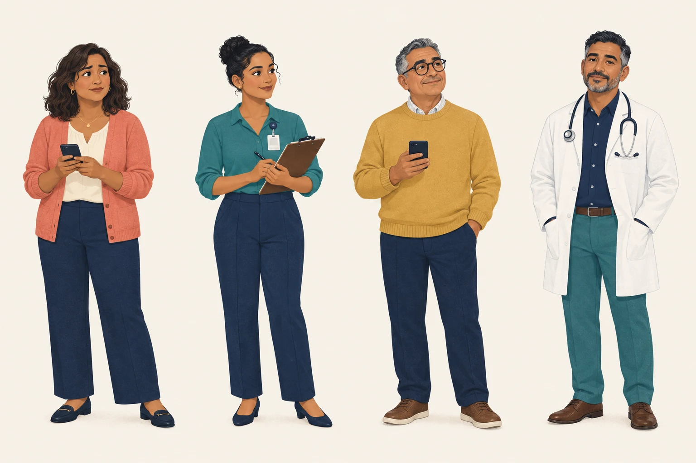
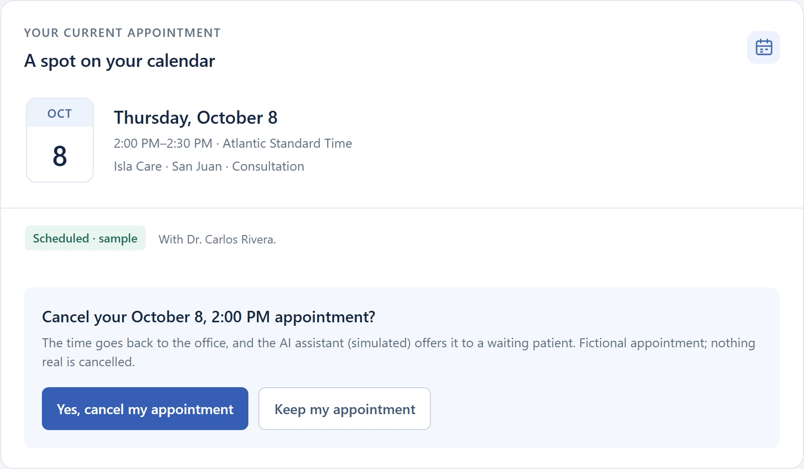
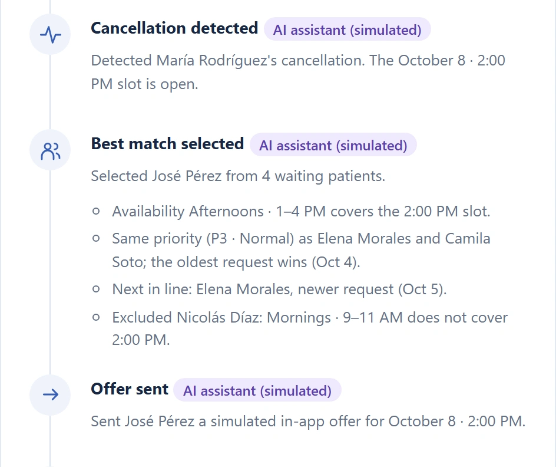
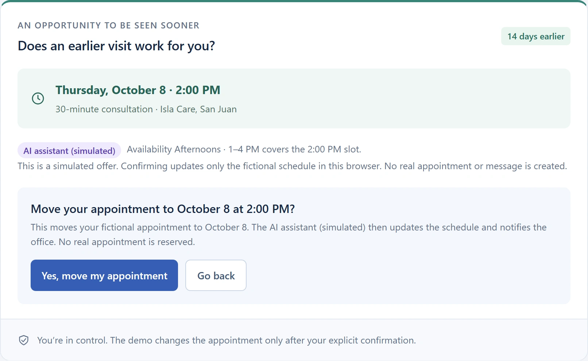
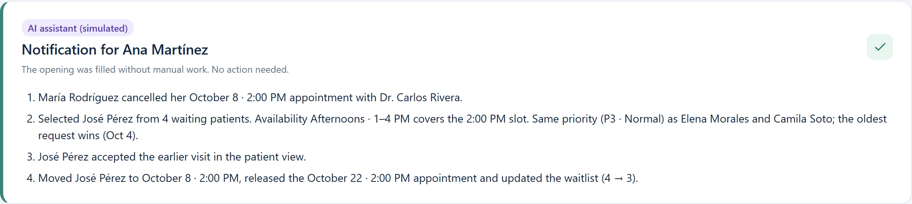
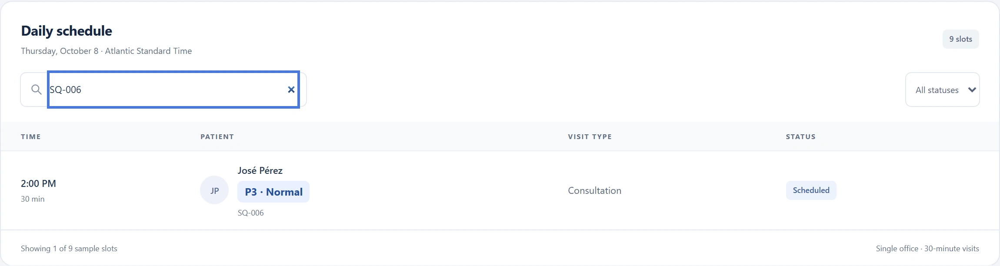

One opening.
A better next step.
An AI assistant turns a cancellation
into an earlier visit for someone waiting.
A fictional story. A working, synthetic demo.
The assistant is simulated and rule-based.

An empty appointment.
A patient still waiting.
A cancellation opens a slot.
Someone needs that time.
Today Ana connects them by hand: update, search, call, chase replies.
One cancellation.
Several loose ends.
“Who can take this slot?
Who has replied?”
Every opening is manual work today.
Ana holds the whole workflow together.
Life changes.
She cancels in her own view.
“Something came up.
I need to cancel.”
One explicit confirmation.
The time goes straight back to the office.
The right opening.
If someone tells him.
“I could come earlier…
if I knew.”
Booked for October 22. Free afternoons.
María’s 2:00 PM slot would fit.
The assistant coordinates.
Patients keep the decisions.
- 01Detect & selectSpots the cancellation and ranks the waitlist by clear rules.
- 02OfferThe best match gets an offer. Nothing moves without a yes.
- 03Update & notifySchedule and waitlist update. Ana gets a summary.
María cancels. José accepts. Ana is notified, not burdened.
Rule-based and simulated in this POC: no AI model, no network · English / Español · No account required
María cancels. The assistant picks José.
Its reasoning is the clinic’s own scheduling rule, shown step by step.


Real POC captures · synthetic data. Rule-based assistant, simulated in the browser.
The assistant offers. José decides.
Why José?
- Free afternoons, 1–4 PM.
- P3 tie: oldest request wins (Oct 4).
- Nicolás excluded: mornings only.
- Elena is next in line.
José accepts with one explicit confirmation.
No message leaves the browser.

The schedule updates itself. Ana is notified.


Less chasing.
More clarity.
| For | Before | With Smart Queue |
|---|---|---|
| Patients | Uncertainty | A fitting offer, and the final say |
| Assistants | Calls and manual follow-up | A summary when it’s done |
| Providers | Schedule ambiguity | An updated appointment list |
The POC demonstrates the workflow. Time saved and access outcomes still need a real-world pilot.
An assistant that acts.
Rules today. A model later.
Rule-based assistant.
Detects, selects, offers, updates, notifies.
Every step labelled and explained.
Model-backed assistant.
Understand free-text EN/ES replies
and edge cases, under staff oversight.
No AI model runs in this POC. Patients still give explicit consent.
Smart Queue —
Less Waiting.
Better Care.
Explore the synthetic workflow.
Help us validate it with care teams.
Next: a measured pilot, secure persistence,
and a model-backed assistant. Today’s is simulated.